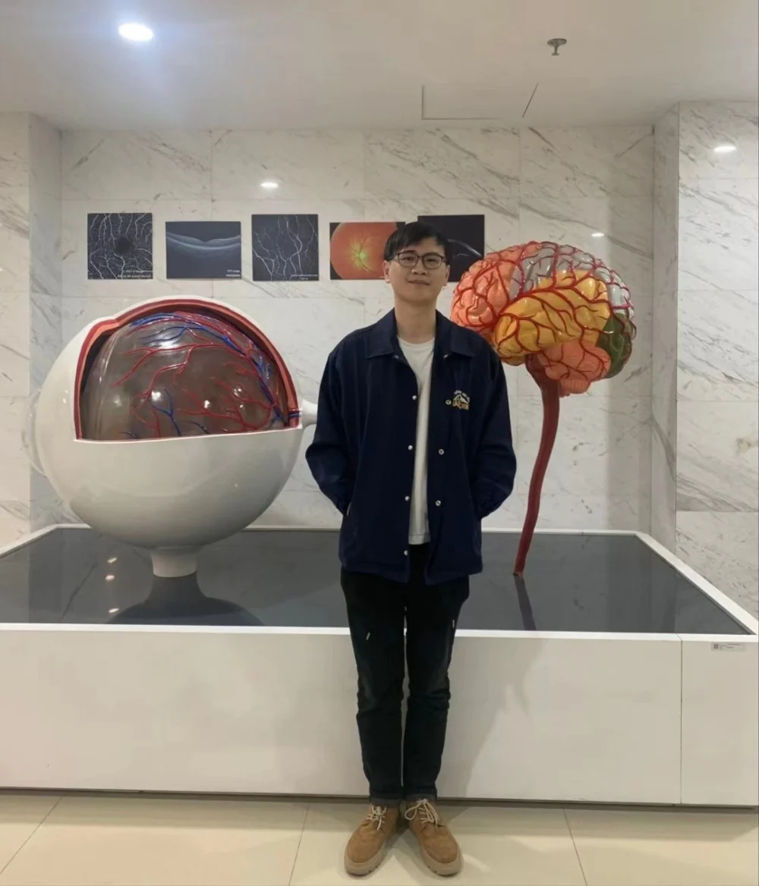

自2020年以来，国家奖学金获奖名单中每年都有我们IMED宁波团队的成员。今年也不例外，iMED宁波团队的吴文俊同学喜获2022年度国家奖学金。在此次专访中，吴文俊同学谈到了自己获奖的感受以及相关的学习经验。
在研一集中教学阶段吴文俊同学表现突出，并取得了绩点为3.89的优异成绩。在研二入组后，他脚踏实地、认真科研、多次主动承担科研任务。作为一名共产党员，他常常乐于助人，积极参加各项志愿活动，例如宁波材料所夏令营志愿者、青少年科技营志愿者、一二·九文艺汇演志愿者等。同时，他也荣获2022年中国科学院大学三好学生荣誉称号。
在问及获奖感受时，他说：“作为今年的国奖获得者，很庆幸也很荣幸，庆幸的是自己延续了iMED宁波团队的优良传统，荣幸的是自己以IMED团队的身份获得此荣誉。在iMED团队的栽培下，自己从懵懂新生成为刚踏入科研大门的学术小白，在赵一天老师的指导下，目前以第一作者身份发表了SCI论文一篇，同时申请了两项发明专利。”
在谈到学习经验时，他说他从未觉得自己是一个天资聪慧或者天赋异禀的人，从小到大的学习过程中，他认为最为重要的就是踏实，尤其在研究生阶段，很多人偏向急于求成而忘记将基础知识打扎实，不重视研一阶段的课程学习，从而在真正开展科研工作中屡屡碰壁。此外，文献的阅读就如往汽车中加油，油量越多，在科研探索之路中才能行的越远，不必担心自己读不懂，只要肯花时间，肯努力，没有过不去的坎。
最后，吴文俊同学感谢了老师、iMED团队、医工所及材料所的帮助与支持，他说他是个幸运的人，获得国奖只是侥幸，今后还会继续努力，勇往直前！
